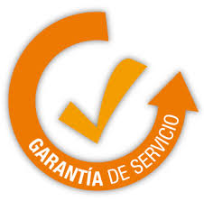

¿Por Qué Elegir Asistencia Tecnológica?

Experiencia y Profesionalismo
Técnicos calificados y con años de experiencia en el sector.
Rapidez y Eficiencia
Soluciones ágiles para minimizar el tiempo de inactividad de tus equipos.
Atención Personalizada
Entendemos tus necesidades y ofrecemos soluciones a medida.
Transparencia
Presupuestos claros y sin sorpresas ocultas.
Precios Competitivos
Calidad de servicio garantizada a un costo justo.

Garantía de Servicio
Confianza total en la calidad de nuestro trabajo.
¿Quiénes Somos?
Somos Asistencia Tecnológica, una empresa dedicada a proporcionar soluciones informáticas confiables y eficientes para hogares y negocios en Quetzaltenango. Nuestra misión es mantener tus equipos en óptimas condiciones para que puedas enfocarte en lo que realmente importa.